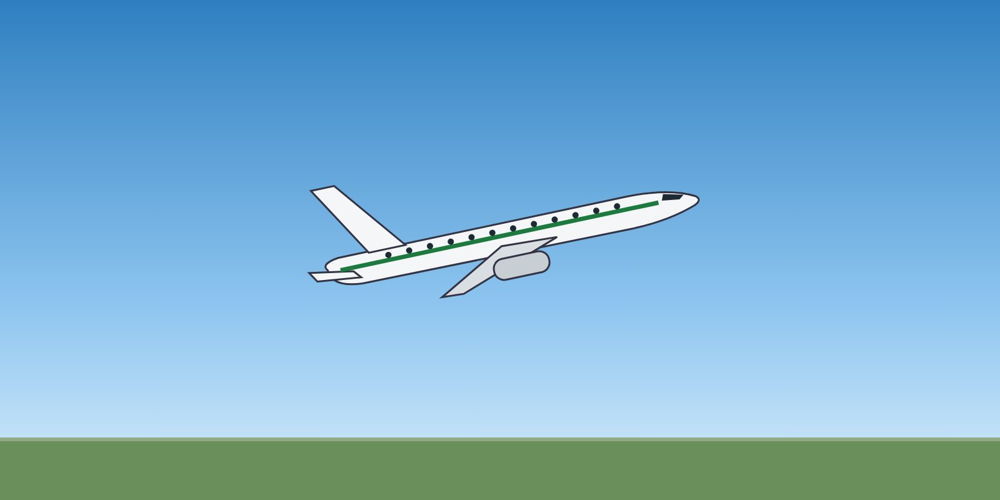
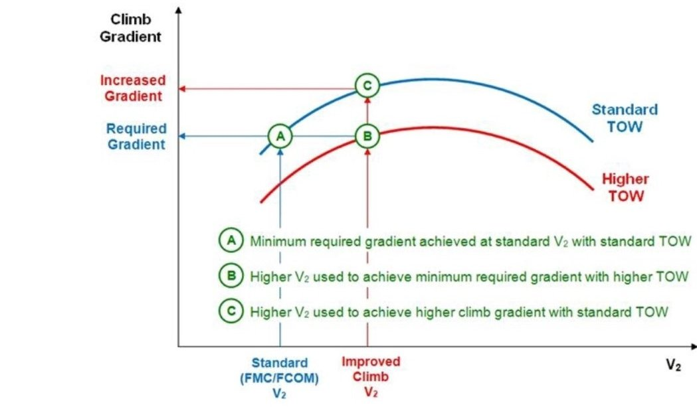

Lesson 04: Take-off Climb Requirements and Improved Climb
Learning objectives
- Describe the four take-off flight path segments and their minimum gradients.
- Define the climb limit weight and the climb gradient.
- Explain improved climb, its advantages and its restrictions.

The take-off flight path
The take-off path runs from brake release to 1,500 ft above the runway (or the end of the transition to the en-route configuration, if higher). The take-off flight path starts at 35 ft at the end of the take-off distance and is computed with the critical engine inoperative from VEF, in still air, without ground effect (CS 25.111, 25.115). Boeing uses the minimum clean manoeuvring speed (VREF40 + 70 kt) as the final take-off speed.

| Segment | Configuration | Minimum gross gradient (twin) |
|---|---|---|
| First | Take-off flaps, gear retracting, V2, take-off thrust | Positive |
| Second | Gear up, take-off flaps, V2, take-off thrust | 2.4 % |
| Third | Level acceleration (min 400 ft) and flap retraction | — |
| Final | Clean, maximum continuous thrust, final take-off speed | 1.2 % |
The take-off thrust time limit (10 minutes with an engine out) ends the third segment. If any gradient cannot be achieved, the weight is reduced to the climb limit weight. More flap means more drag and a lower climb limit weight.

Improved climb
When the runway is longer than the field limit requires, the excess runway can be traded for higher V1, VR and V2. The aeroplane then climbs at a speed closer to its best climb speed, so the climb limit weight (and often the obstacle limit weight) increases. Speeds can be raised until the field length or tyre speed limit becomes limiting, and V1 must stay below VMBE.


Benefits and restrictions
- Benefits: higher weight or higher assumed temperature when climb- or obstacle-limited; more tail clearance; distant obstacles become less limiting; the end of the third segment is reached higher.
- Restrictions: smaller rejected take-off margin; close-in obstacles can become more limiting; more tyre wear; closer to VTIRE and VMBE — a slow rotation can exceed the tyre speed. Not with anti-skid inoperative. Speeds come from the performance tool or FPPM, not from the FMC.

Key takeaways
- Twin minimum gross gradients: 1st > 0, 2nd 2.4 %, final 1.2 %.
- The climb limit weight is computed one engine out, in still air.
- Improved climb trades excess runway for higher speeds and a better gradient.
- Improved climb increases tyre speed and brake energy exposure.
Knowledge check
What is the minimum second-segment gross climb gradient for a twin-engine aeroplane?
- 1.2 %
- 1.7 %
- 2.4 %
- 3.2 %
Answer: C. CS 25.121(b): 2.4 % for two-engine aeroplanes, gear up, take-off flaps, V2.